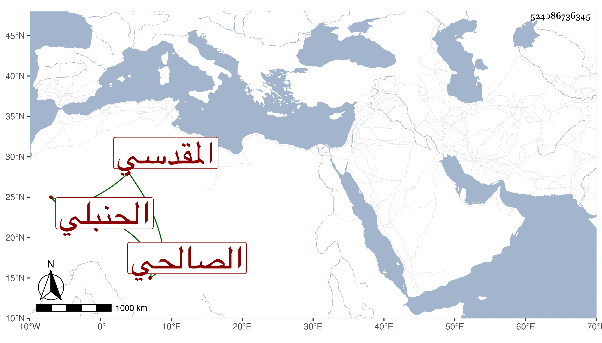

0902Sakhawi.DawLamic.ITO20230111-ara1.EIS1600.524086736345
Biography ID: 524086736345
210
محمد بن عبد الله بن عمر بن يوسف الشمس المقدسي الصالحي الحنبلي ويعرف بابن المكي . قال شنخنا في انبائه ولد سنة إحدى وخمسين وسبعمائة ونفقه قليلا وتعاني الشهادة ولازم مجلس الشمس بن التقي وولي رياسة المؤذنين بالجامع الاموى وكان جهورى الصوت من خيار العدول حسن الشكل طلق الوجه منور الشيبة . مات في جمادي الأولى سنة ست وعشرين بعد أن أصيب بعدة أولاد له كانوا أعيان عدول البلد مع النجابة والوسامة فماتوا بالطاعون عوضهم الله الجنة .
